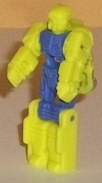
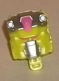
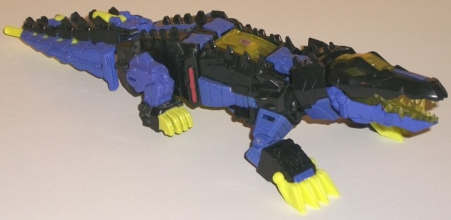
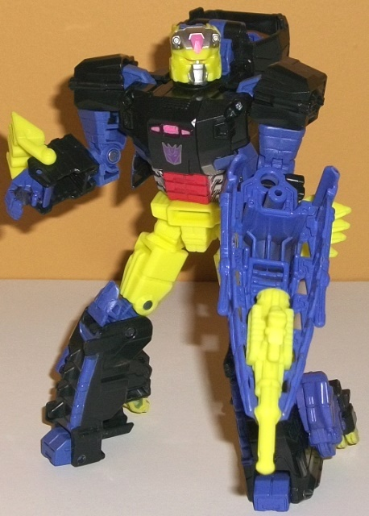

Allegiances
: Decepticon
Size
: Deluxe
Difficulty of Transformation
: Easy
Color Scheme
: Black, moderately
dark purple, bright pea green, and some dull dark red, translucent light
yellowish green, silver, and pink
Rating
: 8.0
(NOTE: Because this is a repaint, this is not a full-blown review. This mainly covers any changes made to the mold and the color scheme, and merely compares it to Titans Return Skullsmasher w/ Grax. For a review on the mold itself, read the review of Titans Return Skullsmasher w/ Grax here .)


Gatorface (love that
name) is mostly a direct redeco of Grax, at least in terms of the robot
mode. He's nearly all a bright pea green, with some moderately dark purple
for the body and upper legs. The two colors go okay together, though I
wish the amount of each was flipped-- the pea green is a bit too loud as
the major color, even if you take into account the whole "early '90s toy
homage" thing. Unfortunately there's no paint on Gatorface's robot mode,
either, which makes the pea green look even louder for some reason. In
head mode, there's the only mold change made to this set when compared
to Skullsmasher w/ Grax, and that's the new face. It's definitely a pretty
decent re-do of G1 Krok's face, with the bright pea green being the major
color along with silver on the faceplate and forehead, and some pink used
for the eyes and the center of the forehead. They're both fairly light
colors and don't contrast all that well against the bright green, though;
I wish something darker had been added. Also, although the general details
from the G1 toy are here, the face seems a bit small proportionally when
compared to the green bits on the side, sort of like his aunt is pinching
his cheeks because he's so cuuute or something like that. It's not a huge
issue, but it is noticeable.


Krok in G1 was an Action
Master that appeared to transform into some kind of flying vehicle-- which
the Collectors' Club
made a toy of
-- but since
this version doesn't come with an alligator partner, Hasbro decided to
do an easy redeco and just make Krok into a... croc... this time around.
Regardless of how well the homage itself is, this is a DYNAMITE color scheme
to apply to this mode. Black and a really nice shade of moderately dark
purple are the main colors, and both are separated pretty well across the
entire figure, so there's not one single large area of just one color on
the toy. As opposed to Gatorface, this time on the figure the bright pea
green is more of a secondary color as opposed to a main one, and it works
MUCH better this way. There's some bright green plastic and/or paint on
the gator claws, bits on the tail and gun, and most prevalently on the
robot mode waist and upper legs. It really contrasts well and gives the
scheme a light color, and also makes the scheme rather croc-y to boot,
so I love the addition. In robot mode there's a few extra colors added
to the chest-- some red on the abs and a bit on the side of the lower legs,
some silver on the side of the abs, and a titch of pink on the chest. It
really helps the chest stand out against the surrounding parts, and looks
quite nice. Finally there's also some translucent light yellowish green
used on the cockpit in croc mode as well as on the top of the face, the
eyes, and most impressively on the tongue and teeth. With all that technorganic
detailing on the tongue and teeth, it all just looks REALLY nice there.
You have to position it right, but the transparent green on the head also
can make the eyes glow fairly well, too.
Beyond the new face,
no mold changes have been made to Titans Return Krok.
Titans Return Krok w/
Gatorface may not be all that great in terms of a direct update to the
G1 character-- beyond the colors, the face, and a few minor details, there
isn't much in common between this version and the original-- but the color
scheme used on this mold just looks absolutely amazing, and I'd definitely
recommend it if you like those early '90s color schemes. Good homage or
no, he looks great.
Review by Beastbot